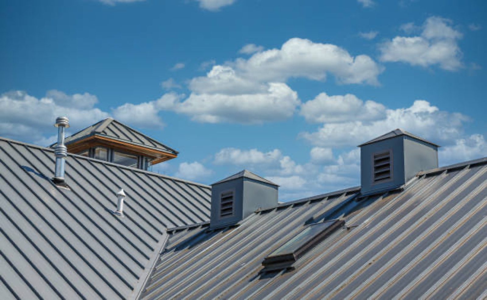

Metal roof installs
Metal roofs installed in about two days, aligned and sealed against leaks.
- Metal roofing
- Aligned panels
- Sealed seams
Roofing contractor · Kyle, TX
Metal roofs, full replacements and leak repairs in Kyle, done right and cleaned up.
Call now(512) 559-8276Hours below

5.0 on Google
Tell us about the leak, the shingles or the old roof.
You hear what the roof needs and what we will do.
Careful work, then cleanup with no debris left.
Leaks fixed, shingles replaced, clear updates and a clean yard. That is the standard on every roof.
Services
Roof replacements, repairs and installs for homes in Kyle and nearby.
Metal roofs installed in about two days, aligned and sealed against leaks.
Leaking roofs replaced to stand up to storms, with the debris cleaned up.

New underlayment and missing shingles replaced. Punctual crew, close attention to detail.

Trust
5.07 Google reviews
The roof had multiple leaks, and after the full replacement, it has withstood several storms without any issues. The crew was efficient, and the cleanup afterward left no debris behind.👌
This team did an amazing job. They turned what I thought would be a huge headache into something simple. They were careful and did things right from the start. They kept me in the loop the whole time, and everyone was friendly and cleaned up after themselves. The roof looks awesome, way better than I expected. Really thankful for their hard work.
Highly skilled roofing professionals! They installed new underlayment and replaced missing shingles flawlessly. Punctual arrival, great attention to detail, and affordable charges. Excellent overall experience from beginning to end!
The quotation was middle of the road compared to others I looked into and the installers finished the metal roof in two days making sure everything was aligned and sealed properly. Week later in light rain no leaks or concerns thus they performed a good job.
About
A roofing contractor serving Kyle and nearby, with a 5.0 rating on Google.
Metal roof installs, full replacements, underlayment and shingle repairs. Careful work, clear explanations and a clean yard when the job is done.
Find us
18940 S I-35 Frontage Rd, Kyle, TX 78640
Call before you stop by so we can find time to talk about your roof.